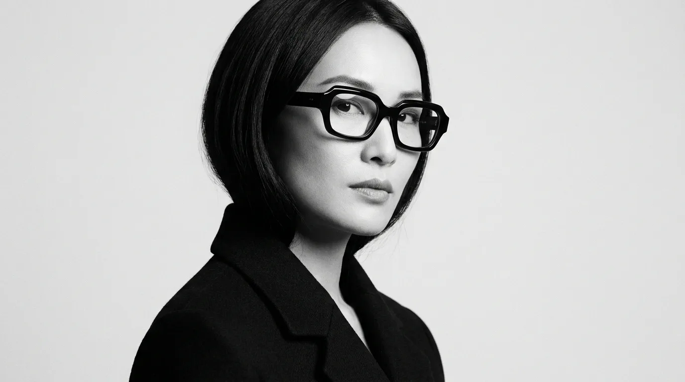

關於澄鏡
把複雜的世界,
把複雜的世界,
調回清澈。
澄鏡 CHÉNG JÌNG 始於一個簡單的信念:眼鏡不該喧嘩。我們相信線條、比例與材質本身就足夠動人,因此以黑與白為基調,讓鏡框回到最純粹的造型語言。
每一副澄鏡都在台北工作室手工削製、拋光、組裝,從一塊義大利板材到貼合臉型的成品,需要經過數十道工序與七到十天的等待。慢,是我們對清澈的堅持。
認識我們的工藝


為什麼選澄鏡
Made by hand三件我們從不妥協的事
手工削製
從板材切割、銼修到拋光,每副鏡框由職人手工完成,線條與弧度為臉型而生。
頂級板材
選用義大利 Mazzucchelli 醋酸纖維,色澤溫潤、韌性佳,配戴愈久愈顯質地。
專業驗光
門市提供完整視光檢測與試戴,搭配德國蔡司鏡片,看得清晰也戴得舒適。
設計理念
「最好的設計,是讓人記得那雙眼睛,而不是那副鏡框。」— 澄鏡主理人・林承澈

門市體驗
像逛畫廊一樣,
像逛畫廊一樣,
挑一副眼鏡。
永康街的澄鏡門市以白盒子概念設計,每副鏡框都像展品般陳列在燈光下。歡迎預約,讓我們陪你慢慢試戴。
- 門市台北市大安區永康街 18 巷 6 號
- 時間週二至週日 12:00–20:00（週一公休）